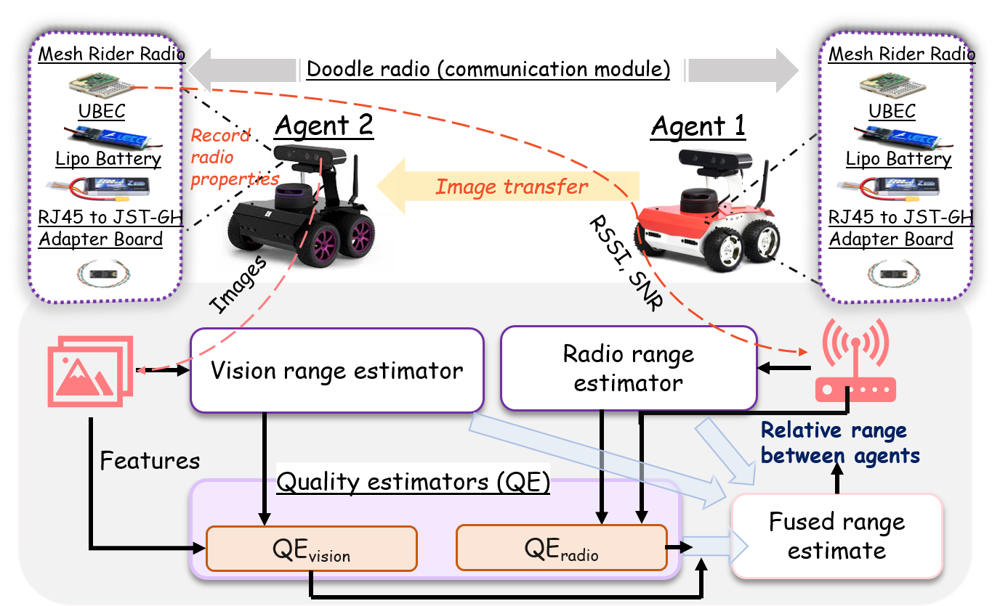
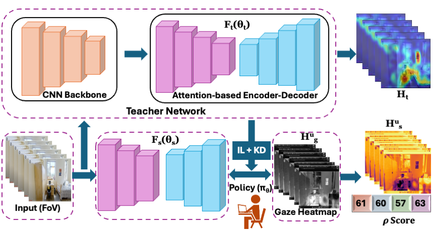
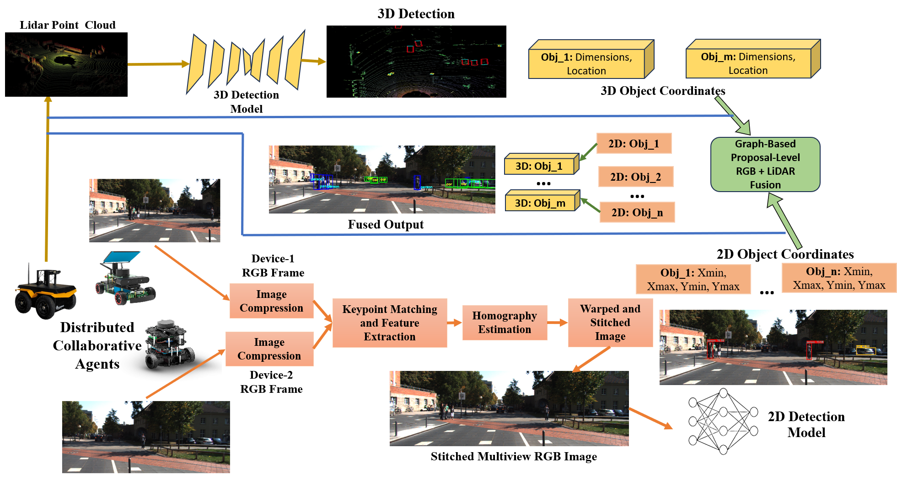
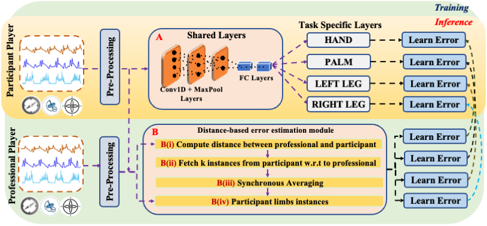
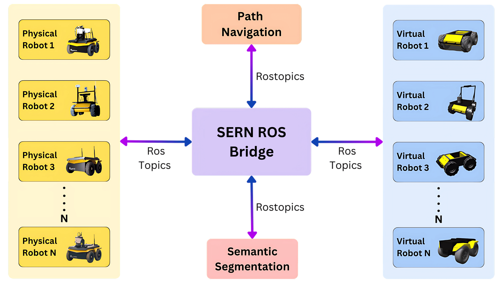
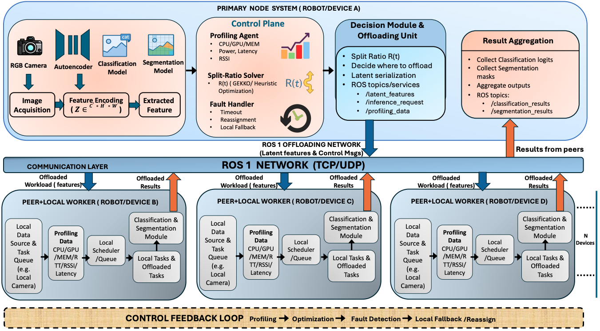
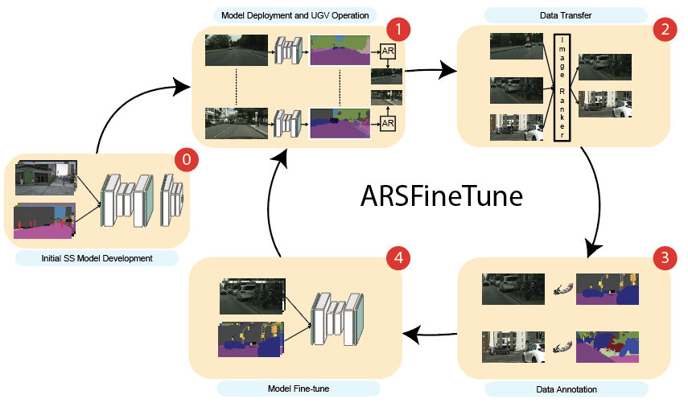
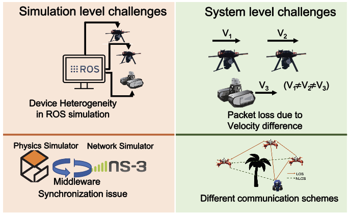
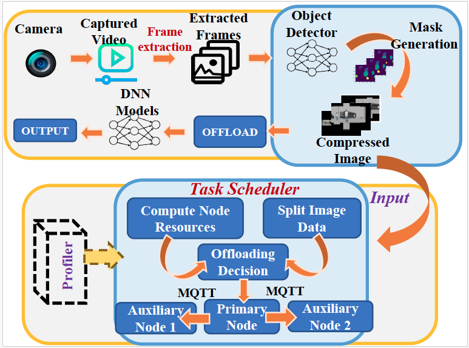

Introduction
I am a 5th-year PhD candidate in Information Systems at the University of Maryland, Baltimore County, a member of MPSC Lab and supervised by Prof. Nirmalya Roy. My research focuses on resource-aware real-time collaborative task execution for improved perception in heterogeneous autonomous systems.
My core research interests lie in Computer Vision, Edge Distributed Computing, and ROS-based autonomous systems. I have 4+ years of experience in designing scalable AI/ML solutions for real-time perception, multimodal sensor fusion, and task allocation in heterogeneous autonomous systems (UAVs & UGVs).
In my most recent work, I'm exploring the integration of Vision-Language Models (VLMs) into autonomous ground vehicles for enhanced situational awareness and adaptive decision-making in complex urban environments. I'm also working on improving 3D perception by fusing RGB, Lidar data to enhance detection accuracy and segmentation precision in dynamic, unstructured environments.
News
| 03/2026 | Paper titled "COHORT: Hybrid RL for Collaborative Large DNN Inference on Multi-Robot Systems Under Real-Time Constraints" accepted at IEEE WoWMoM 2026! |
| 03/2026 | Paper titled "CAViAR: Quality-Aware Vision-and-Radio Fusion for Relative Range Estimation among Collaborative Autonomous Agents" accepted at IEEE WoWMoM 2026! |
| 11/2025 | Paper titled "Imitation-Inspired Semantic-Guided Distillation for User-Conditioned Memorability Prediction" accepted at IEEE ICDM 2025. |
| 06/2025 | Paper titled "CoOpTex: Multimodal Cooperative Perception and Task Execution in Time-critical Distributed Autonomous Systems" accepted at DCOSS-IoT 2025. |
| 05/2025 | Paper titled "SkillNet: Human Actions Assessment via Human-AI Collaboration" accepted at ACM TOMM 2025. |
| 03/2024 | Paper titled "Arsfinetune: On-the-fly Tuning of Vision Models for Unmanned Ground Vehicles" accepted at DCOSS-IoT 2024. Congratulations to all co-authors! |
| 07/2023 | Paper titled "A Novel ROS2 QoS Policy-Enabled Synchronizing Middleware for Co-Simulation of Heterogeneous Multi-Robot Systems" accepted at ICCCN 2023. |
| 10/2023 | Paper titled "HeteroEdge: Addressing Asymmetry in Heterogeneous Collaborative Autonomous Systems" accepted at IEEE MASS 2023. |
Selected Publications
-
IEEE WoWMoM'26 et al. "COHORT: Hybrid RL for Collaborative Large DNN Inference on Multi-Robot Systems Under Real-Time Constraints," In Proc. of IEEE WoWMoM, 2026.
Abstract
Large deep neural networks (DNNs), especially transformer-based and multimodal architectures, are computationally demanding and challenging to deploy on resource-constrained edge platforms like field robots. These challenges intensify in mission-critical scenarios (e.g., disaster response), where robots must collaborate under tight constraints on bandwidth, latency, and battery life, often without infrastructure or server support. To address these limitations, we present COHORT, a collaborative DNN inference and task-execution framework for multi-robot systems built on the Robotic Operating System (ROS). COHORT employs a hybrid offline-online reinforcement learning (RL) strategy to dynamically schedule and distribute DNN module execution across robots. Our key contributions are threefold: (a) Offline RL policy learning combined with Advantage-Weighted Regression (AWR), trained on auction-based task allocation data from heterogeneous DNN workloads across distributed robots, (b) Online policy adaptation via Multi-Agent PPO (MAPPO), initialized from the offline policy and fine-tuned in real time, and (c) comprehensive evaluation of COHORT on vision-language model (VLM) inference tasks such as CLIP and SAM, analyzing scalability with increasing robot/workload and robustness under . We benchmark COHORT against genetic algorithms and multiple RL baselines. Experimental results demonstrate that COHORT reduces battery consumption by 15.4% and increases GPU utilization by 51.67%, while satisfying frame-rate and deadline constraints 2.55 times of the time.
-
IEEE WoWMoM'26 Gaurav Shinde, Anuradha Ravi, Jared Lewis, Andre Harrison, Henry Gardiner, et al. "CAViAR: Quality-Aware Vision-and-Radio Fusion for Relative Range Estimation among Collaborative Autonomous Agents," In Proc. of IEEE WoWMoM, 2026.

Abstract
In mission-critical scenarios, autonomous agents often operate in GPS-denied or GPS-degraded environments, making it challenging to localize agents relative to themselves and objects of interest (e.g., potential cover) or adversarial robots. While vision- and radiobased modalities have individually been used to estimate relative ranges between agents and surrounding objects, each modality suffers from inherent limitations. Vision-based range estimation degrades significantly under low image overlap, partial visibility, or when an agent is too close to an object, resulting in effective zoom-in and loss of geometric context. Conversely, radio-based ranging is susceptible to multipath interference, signal fading, and environmental variability, which can substantially reduce range accuracy and reliability. To address these challenges, we introduce CAViAR, a quality-aware multimodal fusion framework for accurate relative range estimation among collaborative autonomous agents. CAViAR assigns modality-specific reliability scores and performs statistical fusion to adaptively weigh vision and radio inputs based on their estimated quality. The framework employs modality-specific quality estimators augmented with temporal features and integrates MBConv blocks to enable efficient feature processing on resource-constrained robotic platforms. We validate CAViAR on ROSbot 2 and ROSbot 2 Pro platforms using an in-house dataset collected across diverse indoor and outdoor environments. Experimental results demonstrate that our approach outperforms single-modality baselines by approximately 21% over vision-only and 36% over radio-only range estimates. Moreover, CAViAR adapts robustly to variations in scene structure, viewpoint overlap, and occlusions without requiring fine-tuning on new environments, highlighting its practicality for real-world deployment.
-
IEEE ICDM'25 I. Ghosh, , K. Jayarajah, and N. Roy, "Imitation-Inspired Semantic-Guided Distillation for User-Conditioned Memorability Prediction," In Proc. of the 25th IEEE International Conference on Data Mining, 2025.

Abstract
Image memorability (IM) estimation typically relies on learning generic semantic features from large-scale datasets; however, memorability is intrinsically individual-dependent and personalized visual viewing behavior, but overlooking this variability can undermine model performance in downstream cognitive and human-machine interaction tasks, leading towards suboptimal performance. To address this, we propose MemGaze, a unified framework that integrates knowledge distillation (KD) and imitation learning (IL) to jointly learn generic and personalized salient representations for memorability estimation by leveraging both image content and gaze-derived heatmaps. MemGaze employs a teacher network built upon a pretrained ResNet-50 backbone, followed by an encoder-decoder architecture coupled with spatial and channel attention mechanisms to generate generic saliency-aware memorability maps. A lightweight, attention-guided student encoder-decoder is then optimized through a composite imitation-guided distillation process, where knowledge is distilled from the teacher while simultaneously imitating user-specific gaze fixation heatmaps. Through this joint training process, the student network learns to produce personalized memorability estimates while achieving substantial reductions in computational complexity. We validate MemGaze on two public IM estimation datasets (LaMem and SUN) and a inhouse WoM dataset comprising of 45 participants (UMBC IRB #670) engaged in visual search and navigation tasks that reflect individualized visual attention patterns. MemGaze outperforms nine state-of-the-art IM models by capturing coarse-to-fine saliency and adapting to individual attention, achieving ≈6% improvement in memorability prediction.
-
DCOSS-IoT'25 et al. "CoOpTex: Multimodal Cooperative Perception and Task Execution in Time-critical Distributed Autonomous Systems," In Proc. of DCOSS-IoT, 2025.

Abstract
Integrating multimodal data such as RGB and LiDAR from multiple views significantly increases computational and communication demands, which can be challenging for resource-constrained autonomous agents while meeting the time-critical deadlines required for various mission-critical applications. To address this challenge, we propose CoOpTex, a collaborative task execution framework designed for cooperative perception in distributed autonomous systems (DAS). CoOpTex contribution is twofold: (a) CoOpTex fuses multiview RGB images to create a panoramic camera view for 2D object detection and utilizes 360° LiDAR for 3D object detection, improving accuracy with a lightweight Graph Neural Network (GNN) that integrates object coordinates from both perspectives, (b) To optimize task execution and meet the deadline, CoOpTex dynamically offloads computationally intensive image stitching tasks to auxiliary devices when available and adjusts frame capture rates for RGB frames based on device mobility and processing capabilities. We implement CoOpTex in real-time on static and mobile heterogeneous autonomous agents, which helps to significantly reduce deadline violations by 100% while improving frame rates for 2D detection by 2.2× in stationary and 2× in mobile conditions, demonstrating its effectiveness in enabling real-time cooperative perception.
-
ACM TOMM'25 I. Ghosh, Avijoy Chakma, et al. "SkillNet: Human Actions Assessment via Human-AI Collaboration," ACM Transactions on Multimedia Computing, Communications, and Applications, 2025.

Abstract
Intelligent human motion analysis is essential for developing next-generation IoT and AR/VR systems that enable automated, interpretable, and fine-grained performance assessment. Motivated by the need for real-time, explainable, and transferable skill evaluation, we propose a wearable sensing framework to assess human performance by tracking skill progression and minimizing injury risk. We use live badminton gameplay and workout exercises as representative use cases, where motion dynamics, postural stability, and limb coordination are critical to success. Both activities demand optimal posture and synchronized limb movements, while improper actions or suboptimal technique can lead to decreased performance and higher injury susceptibility. We introduce SkillNet, a multi-task learning framework that extracts shared representations across all limbs while preserving limb-specific motion signatures. The architecture employs task-specific regressors to detect subtle inter-limb dissimilarities and distinctive traits, enabling collective inference in a body sensor network (BSN) environment. To holistically measure performance, we formulated a weighted performance indicator (PI) that fuses AI-driven scoring with domain-expert evaluations, providing a robust metric for both qualitative and quantitative assessment. We evaluate SkillNet on three diverse datasets Badminton Activity Recognition (BAR), Multi-Modalities Dataset of Sports (MMDOS), and Daily and Sports Activities (DSADS) capturing a broad spectrum of motion types and skill intensities. Results show that SkillNet achieves an R-squre score of 86% and a mean squared error of 0.0093 in performance prediction. The integrated AI–expert scoring mechanism improves baseline performance estimation by 14.95% , demonstrating the advantage of combining human expertise with automated analysis. We further benchmark inference time, memory usage, and power consumption of the SkillNet , validating its efficiency and feasibility for real-time, end-to-end task inference on resource-constrained embedded edge devices, Jetson Nano and Jetson Xavier NX platforms.
-
Under Review et al. "SERN: Simulation-Enhanced Realistic Navigation for Multi-Agent Robotic Systems in Contested Environments."

Abstract
Cross reality integration of simulation and physical robots is a promising approach for multi-robot operations in contested environments, where communication may be intermittent, interference may be present, and observability may be degraded. We present SERN (Simulation-Enhanced Realistic Navigation), a framework that tightly couples a high-fidelity virtual twin with physical robots to support real-time collaborative decision making. SERN makes three main contributions. First, it builds a virtual twin from geospatial and sensor data and continuously corrects it using live robot telemetry. Second, it introduces a physics-aware synchronization pipeline that combines predictive modeling with adaptive PD control. Third, it provides a bandwidth-adaptive ROS bridge that prioritizes critical topics when communication links are constrained. We also introduce a multi-metric cost function that balances latency, reliability, computation, and bandwidth. Theoretically, we show that when the adaptive controller keeps the physical and virtual input mismatch small, synchronization error remains bounded under moderate packet loss and latency. Empirically, SERN reduces end-to-end message latency by 15% to 25% and processing load by about 15% compared with a standard ROS setup, while maintaining tight real-virtual alignment with less than 5 cm positional error and less than 2 degrees rotational error. In a navigation task, SERN achieves a 95% success rate, compared with 85% for a real-only setup and 70% for a simulation-only setup, while also requiring fewer interventions and less time to reach the goal. These results show that a simulation-enhanced cross-reality stack can improve situational awareness and multi-agent coordination in contested environments by enabling look-ahead planning in the virtual twin while using real sensor feedback to correct discrepancies.
-
Under Review et al. "MobHeteroCAS: Mobility-Aware DNN Task Scheduling in Heterogeneous Collaborative Autonomous Systems," ACM TAAS Journal, 2024.

-
DCOSS-IoT'24 Ahmed, M., Hasan, Z., Faridee, A. Z. M., , Jayarajah, K., Purushotham, S., ... & Roy, N., "Arsfinetune: On-the-fly Tuning of Vision Models for Unmanned Ground Vehicles," Proc. of DCOSS-IoT, 2024.

Abstract
The performance of semantic segmentation (SS) can degrade when the data distribution in the deployed environment is different from what the model initially learned during their training. While domain adaptation (DA) and continual learning (CL) methods have been proposed to improve performance in new or unseen domains over time, the effort required for annotating large swathes of training data during deployment is non-trivial; acquiring new data for training incurs both significant network, device memory costs, and manual effort for labeling. To address this, we propose ARSFineTune, a novel framework that actively selects the most informative regions of visuals encountered by a mobile robot for the CL network to learn from, greatly minimizing the data transfer overhead related to annotations. We first propose a proficient entropy-driven ranking mechanism to identify candidate regions and rank challenging images at the edge node. We then facilitate a cyclical feedback loop between the server and edge, continuously refining the accuracy of semantic segmentation by fine-tuning the model with minimal transferred data to/from the field deployed device. We implement ARSFineTune in a real-time setting using the Robotics Operating System (ROS), where a Jackal (an unmanned ground vehicle - UGV) collaborates with the central server. Through extensive experiments, we found that ARSFineTune delivers competitive performance, closely aligning with existing state-of-the-art techniques, while requiring substantially less data for fine-tuning. Specifically, with only 5% of the total labeled regions (25% challenging regions of the most 20% problematic samples) of the entire dataset for fine-tuning, ARSFineTune reaches a performance level nearly identical (≈ 97%) to the previous state-of-the-art model, boasting mIoU scores of 59.5% on the Cityscape dataset and 41% on the CAD-EdgeTune dataset, which is a challenging dataset due to varying lighting conditions over time. The reduction in annotation efforts also contribute to a 23.5% improved network latency and 41% less memory usage during model inference stage on the UGV vehicle; 79% reduction in data transfer time between UGV and annotation server and finally, 16.59% reduction in latency, 28.57% less power usage and 10% less memory usage in the server during model fine-tuning stage.
-
ICCCN'23 Emon Dey, Mikolaj Walczak, et al. "A Novel ROS2 QoS Policy-Enabled Synchronizing Middleware for Co-Simulation of Heterogeneous Multi-Robot Systems," In Proc. of ICCCN, 2024.

Abstract
Recent Internet-of-Things (IoT) networks span across a multitude of stationary and robotic devices, namely unmanned ground vehicles, surface vessels, and aerial drones, to carry out mission-critical services such as search and rescue operations, wildfire monitoring, and flood/hurricane impact assessment. Achieving communication synchrony, reliability, and minimal communication jitter among these devices is a key challenge both at the simulation and system levels of implementation due to the underpinning differences between a physics-based robot operating system (ROS) simulator that is time-based and a network-based wireless simulator that is event-based, in addition to the complex dynamics of mobile and heterogeneous IoT devices deployed in a real environment. Nevertheless, synchronization between physics (robotics) and network simulators is one of the most difficult issues to address in simulating a heterogeneous multi-robot system before transitioning it into practice. The existing TCP/IP communication protocol-based synchronizing middleware mostly relied on Robot Operating System 1 (ROS1), which expends a significant portion of communication bandwidth and time due to its master-based architecture. To address these issues, we design a novel synchronizing middleware between robotics and traditional wireless network simulators, relying on the newly released real-time ROS2 architecture with a masterless packet discovery mechanism. Additionally, we propose a ground and aerial agents' velocity-aware customized QoS policy for Data Distribution Service (DDS) to minimize the packet loss and transmission latency between a diverse set of robotic agents, and we offer the theoretical guarantee of our proposed QoS policy. We performed extensive network performance evaluations both at the simulation and system levels in terms of packet loss probability and average latency with line-of-sight (LOS) and non-line-of-sight (NLOS) and TCP/UDP communication protocols over our proposed ROS2-based synchronization middleware. Moreover, for a comparative study, we presented a detailed ablation study replacing NS-3 with a real-time wireless network simulator, EMANE, and masterless ROS2 with master-based ROS1. Our proposed middleware attests to the promise of building a large-scale IoT infrastructure with a diverse set of stationary and robotic devices that achieve low-latency communications (12% and 11% reduction in simulation and reality, respectively) while satisfying the reliability (10% and 15% packet loss reduction in simulation and reality, respectively) and high-fidelity requirements of mission-critical applications.
-
IEEE MASS'23 , E. Dey, M. Devnath, I. Ghosh, N. Khan, J. Freeman, T. Gregory, N. Suri, K. Jayarajah, S. Ramamurthy, N. Roy, "HeteroEdge: Addressing Asymmetry in Heterogeneous Collaborative Autonomous Systems," In Proc. of IEEE MASS, 2023.

Abstract
Gathering knowledge about surroundings and generating situation awareness for autonomous systems is of utmost importance for systems developed for smart urban and uncontested environments. For example, a large area surveillance system is typically equipped with multi-modal sensors such as cameras and LIDARs and is required to execute deep learning algorithms for action, face, behavior, and object recognition. However, these systems are subjected to power and memory limitations due to their ubiquitous nature. As a result, optimizing how the sensed data is processed, fed to the deep learning algorithms, and the model inferences are communicated is critical. In this paper, we consider a testbed comprising two Unmanned Ground Vehicles (UGVs) and two NVIDIA Jetson devices and posit a self-adaptive optimization framework that is capable of navigating the workload of multiple tasks (storage, processing, computation, transmission, inference) collaboratively on multiple heterogenous nodes for multiple tasks simultaneously. The self-adaptive optimization framework involves compressing and masking the input image frames, identifying similar frames, and profiling the devices for various tasks to obtain the boundary conditions for the optimization framework. Finally, we propose and optimize a novel parameter split-ratio, which indicates the proportion of the data required to be offloaded to another device while considering the networking bandwidth, busy factor, memory (CPU, GPU, RAM), and power constraints of the devices in the testbed. Our evaluations captured while executing multiple tasks (e.g., PoseNet, SegNet, ImageNet, DetectNet, DepthNet) simultaneously, reveal that executing 70% (split-ratio=70%) of the data on the auxiliary node minimizes the offloading latency by ≈ 33% (18.7 ms/image to 12.5 ms/image) and the total operation time by ≈ 47% (69.32s to 36.43s) compared to the baseline configuration (executing on the primary node).
-
IEEE EICT'19 NB Noor, et al. "An Efficient Technique of Hemoglobin Level Screening Using Machine Learning Algorithms," IEEE EICT, 2019.📊 Add figure:
images/eict19.pngAbstract
Hemoglobin (Hb), a very significant parameter for the human body and deficiency of it causes anemia. During pregnancy, menstruation and ICU deficiency of it can be very risky and even caused death. So, it is important to diagnose it continuously. Usually, physicians examine it by conducting a blood test to confirm it is painful, time-consuming and costly. The major concept of this study is to screen Hb levels within a short period of time. In this study, the data of clinical blood Hb levels of a total of 104 people (54 males and 50 females) are collected along with an eye conjunctiva image. The images are taken with a Smartphone camera of constant resolution and lighting. Using MATLAB, image processing method, the percentages of the red, green and blue pixels are extracted. Taking those features, the Hb level is plotted. The 104 data have been split into two sets where the first 81 data for training purposes, the remaining 23 data have been considered for testing. To train the model of 81 data, Multivariate Linear Regression (MLR), Decision Tree (Medium), Linear Support Vector Regression (SVR) are taken and the lowest percentage of error of 11.01% has been found in the Decision Tree (Medium) while testing the 23-test data.
-
BECITHCON'19 NB Noor, et al. "Comparative Study Between Decision Tree, SVM and KNN to Predict Anaemic Condition," IEEE BECITHCON, 2019.📊 Add figure:
images/becithcon19.pngAbstract
Anemia, a disease which is caused by an inadequacy of hemoglobin or red blood cells in the blood. It is very risky at the time of pregnancy, menstruation and in ICU sometimes causing death. So, it is a need of hemoglobin and detects anemia quickly. Usually, doctors examine the eye conjunctiva color and confirmed by a blood test which is painful, time-consuming and costly. In this study, a total of 104 people (54 males and 50 females) are collected with their clinical blood hemoglobin level, anemic condition and taken palpebral conjunctiva image. The images are captured with a cell phone camera of good resolution. By using the images, the percentage of the red, green and blue pixels are extracted in MATLAB, image processing method. Taking those features, the Hemoglobin level is plotted. A total of 81 data is taken for training purposes and 23 data for testing. For Anemia detection, the 81 data are trained with a used different classifier such as Linear SVM, Coarse Tree, and Cosine KNN and have been got highest accuracy of 82.61% in Decision Tree (Coarse) by testing 23 data.
Skills
Languages
ML / AI
Robotics & Hardware
Tools & Simulation
Experience
Graduate Research Assistant
Jan 2022 – PresentDeveloping frameworks for efficient UAV-UGV collaboration, optimizing task distribution and reducing communication overhead. Improving 3D perception by fusing RGB, LiDAR, and radar data. Integrating Vision-Language Models (VLMs) into autonomous ground vehicles for enhanced situational awareness.
Graduate Teaching Assistant
Jan 2022 – Dec 2023IS-603 (Decision-making Support System), IS-425 (Decision Support System), IS-733 (Data Mining).
Education
Doctor of Philosophy (PhD) in Information Systems
Jan 2022 – PresentPhD Topic: Resource-Aware Real-Time Collaborative Task Execution for Improved Perception In Heterogeneous Autonomous Systems
Advisor: Dr. Nirmalya Roy
Blog & News
-
2026 · Research Update
Two papers Accepted at IEEE WoWMoM 2026
First Authored COHORT and Co-authored CAViER have been accepted. We recently introduced COHORT, a ROS-based framework enabling heterogeneous robot teams to collaboratively execute large Vision-Language Models with real-time, energy-aware optimization. In parallel, our work on CAViAR presents a quality-aware multimodal fusion approach for robust relative distance estimation in GPS-denied environments
-
2025 · Research Update
Three Papers Published in 2025
Exciting year with publications at ICDM, DCOSS-IoT, and ACM TOMM covering distillation, cooperative perception, and human action assessment.
-
2025 · Project Spotlight
VLMs Meet Autonomous Ground Vehicles
Ongoing research integrating Vision-Language Models into UGVs for human-like reasoning in complex urban environments.